“Edino česar se moramo bati, je strahu samega!” je bil neumen nasvet.
Seveda, ne delajte si zalog toaletnega papirja – ampak, če se politiki sami bojijo strahu, bodo zmanjšali pomen resnične nevarnosti in se izognili “množični paniki”. Strah ni problem. Problem je kam preusmerimo svoj strah.
Strah nam daje energijo, da se zdaj soočimo z nevarnostmi in se pripravimo na vse nevarnosti, ki še prihajajo.
Iskreno, midva (Marcel, epidemolog + Nicky, razvijalec videoiger) sva v skrbeh. Staviva, da ste tudi vi! Zato sva usmerila najin strah v izvedbo teh igrivih simulacij, da lahko tudi vi usmerite svoj strah v razumevanje:
- Zadnjih nekaj mesecev (epidemiologija 101, model SEIR, R & R0)
- Naslednjih nekaj mesecev (karantena, sledenje stikov, maske)
- Naslednjih nekaj let (izguba imunosti?, brez cepiva?)
Ta vodič (objavljeno 1.5.2020, kliknite za opombo!→[1]) bi vam naj dal upanje in strah, da premagate COVID-19 na način, ki ščiti našo mentalno in duševno zdravje. Optimizem potrebujemo za ustvarjanje načrtov, za pripravo rezervnih načrtov pa potrebujemo pesimizem.
Kot je nekoč rekel Gladys Bronwyn, “Optimist si izmisli letalo, pesimist pa padalo.”
Torej, pripnite se, kmalu bomo doživeli nekaj turbolenc!
Piloti uporabljajo simulatorje letenja, da se naučijo, kako ne bi strmoglavili letal.
Epidemologi uporabljajo simolatorje epidemij, da se naučijo, kako ne bi strmoglavili človeštva.
Torej, naredimo zelo, *zelo* preprost “simulator epidemije letenja”! V tej simulaciji lahko <icon i></icon> okuženi ljudje spremenijo <icon s></icon> dovzetne ludi v <icon i></icon> okužene ljudi:
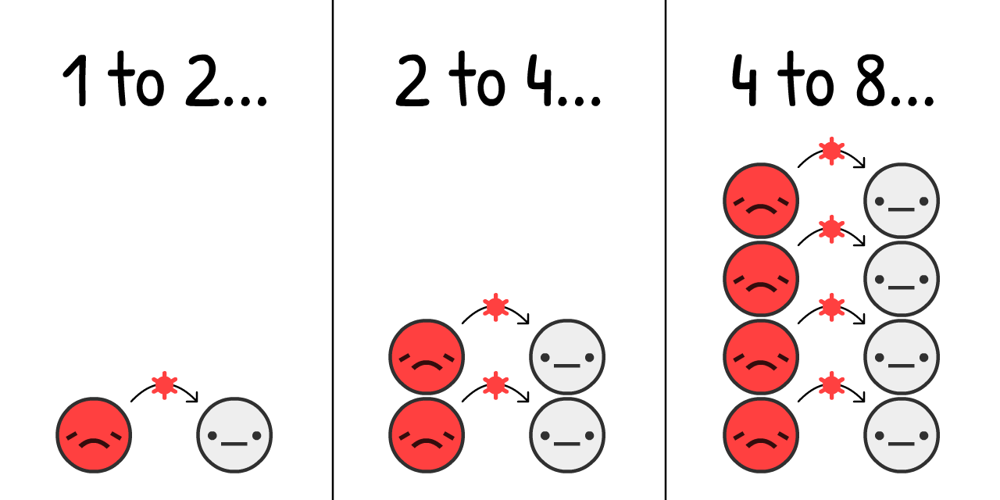
Ocenjuje se, da na začetku izbruha COVID-19, virus skoči iz <icon i></icon> na <icon s></icon> vsake 4 dni, v povprečju.[2] (ne pozabite, da obstaja veliko različic).
Če na populacijo, ki ima v začetku samo 0,001% okuženih, dodamo simulacijo "podvoji vsake 4 dni" in nič druga, kaj se zgodi?
Pritisni “Začetek” za predvajanje simulacije! Kasneje lahko ponoviš z drugačnimi nastavitvami: (tehnična opozorila: [3])
<div class=“sim”>
<iframe src=“sim?stage=epi-1” width=“800” height=“540”></iframe>
</div>
To je eksponentna krivulja. Najprej narašča zelo počasi in nato eksplodira. “Ah, to je samo gripa” do "Ojoj, gripa ne bi smela ustvarjati množičnih grobišč v mestih".
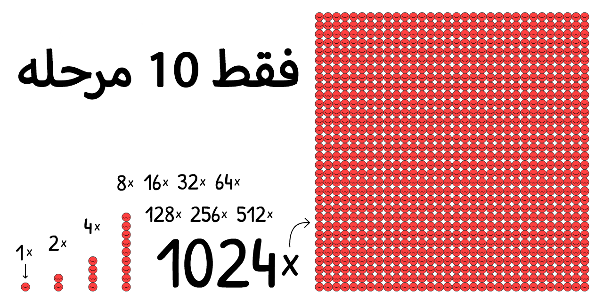
Ampak ta simulacija je napačna, saj se na srečo ekponentna
rast ne more odvijati v neskončnost.
Ena od omejitev širjenja virusa je tudi, da se ne more širiti, če
so vsi že okuženi:
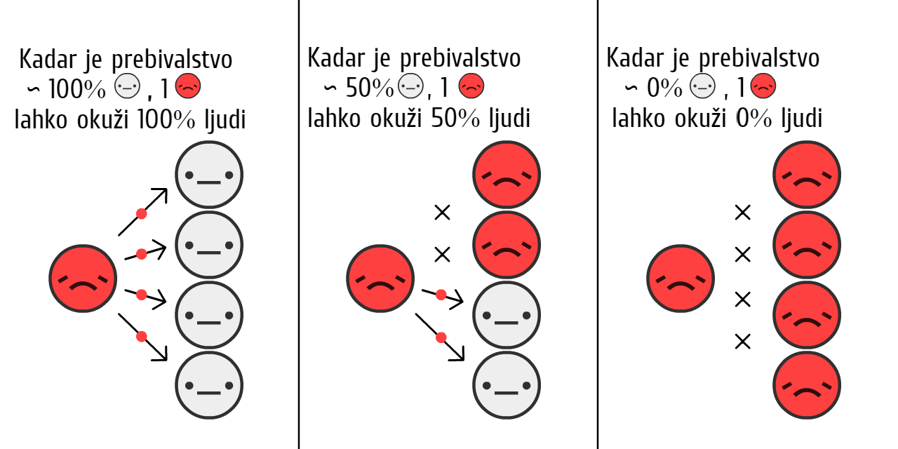
Več <icon i></icon> kot je, hitreje <icon s></icon>
postanejo <icon i></icon>, ** ampak manj kot je <icon s></icon>,
počasneje <icon s></icon> postanejo <icon i></icon>.**
Kako to vpliva na rast epidemije?
Odgovor se skriva v naslednjih vrsticah:
<div class=“sim”>
<iframe src=“sim?stage=epi-2” width=“800” height=“540”></iframe>
</div>
To je logistična krivulja rasti v obliki črke S. Sprva raste počasi, eskplodira in se spet upočasni.
Ampak ta simulacija je še vedno napačna.
Ne upoštevamo dejstva, da <icon i></icon> okuženi ljudje ščasoma niso več nalezljivi, saj so 1) ozdraveli, 2) “ozdraveli” s pljučno degeneracijo ali 3) umrli.
Poenostavimo, da so si vsi <icon i></icon> okuženi ljudje <icon r></icon> opomogli. (Zgolj ne pozabimo, da si v realnosti nekateri ne opomorejo.)
Pretvarjajmo se, da se <icon r></icon> nemorejo ponovno okužiti – za zdaj! – ostanejo imuni celo življenje.
Pri COVID-19 je predvideno, da si v povprečju <icon i></icon> kužen 10 dni. [4]
To pomeni, da si bodo nekateri opomogli prej, nekateri kasneje.
Spodnja simulacija prikazuje, kako bi izgledalo, če bi na začetku bili 100% <icon i></icon>:
<div class=“sim”>
<iframe src=“sim?stage=epi-3” width=“800” height=“540”></iframe>
</div>
To je ravno nasprotje eksponentne rasti,, eksponentno padajoča krivulja.
Kaj se zgodi, če z obnovitvijo simulirate logistično rast v obliki črke S?
rasti z okrevanjem?
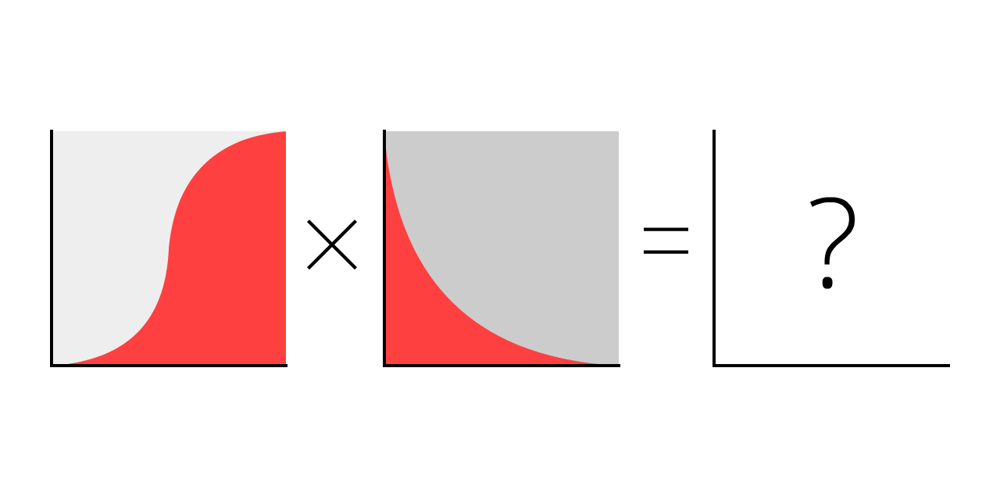
Pa ugotovimo…
<b style=‘color:#ff4040’>Rdeča krivulja</b> so trenutni primeri <icon i></icon>,
<b style=‘color:#999999’>Siva krivulja</b> so vsi primeri (trenutni + opomogli <icon r></icon>), kjer je na začetku 0.001% <icon i></icon>:
<div class=“sim”>
<iframe src=“sim?stage=epi-4” width=“800” height=“540”></iframe>
</div>
In tako pridemo do najbolj znane krivulje!
To ni normalna porazdelitev, niti ni “logaritemsko normalna” porazdelitev. Krivulja ni poimenovana, vendar ste jo že videli nešteto krat.
To je model SIR,[5]
(<icon s></icon>Susceptible(Dovzetni) <icon i></icon>Infectious(nalezljivi) <icon r></icon>Recovered(opomogli))
Druga-najbolj pomembna ugotovitev v knjigi Epidemiology 101:
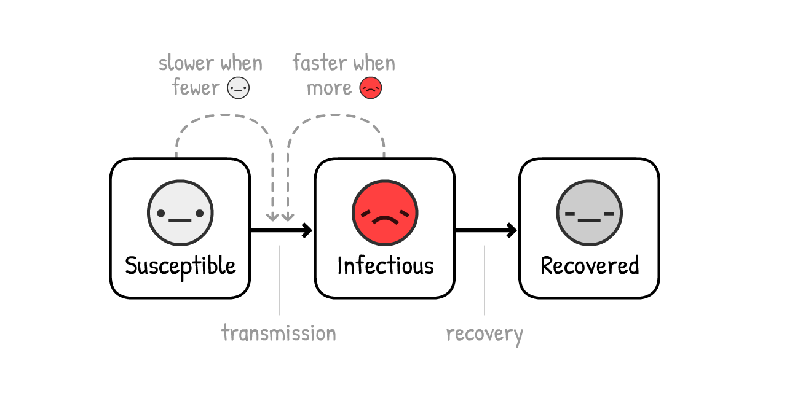
Opomba: Simulacije, ki obveščajo o politiki, so precej bolj zapletene od tega!
Ampak model SIR še vedno pojasni glavne rezultate, čeprav so izpuščene podrobnosti.
Pravzaprav, dodajmo še en detajl: preden <icon s></icon> postane <icon i></icon>, je sprva <icon e></icon> izpostavljen.
To je obdoblje, ko se je okužil, ampak virusa še ne prenaša na druge - je okužen ampak še nenalezljiv.
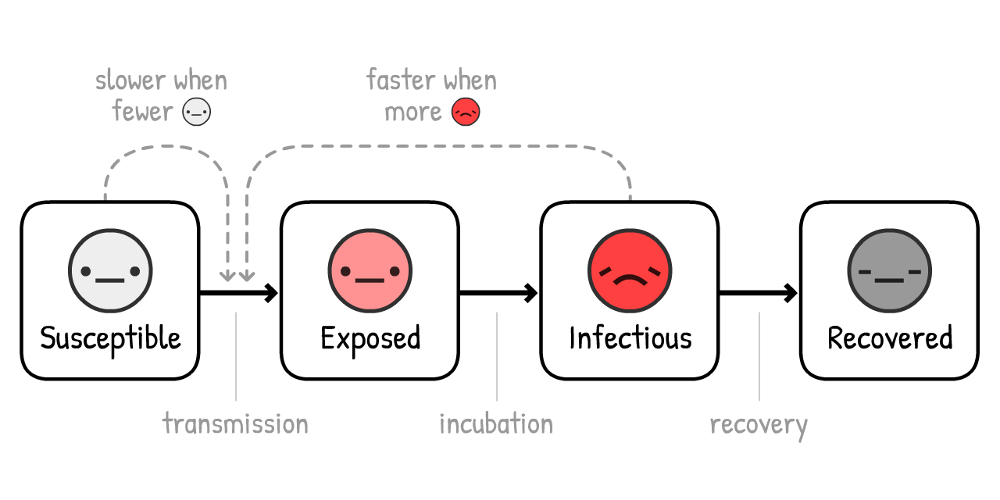
(To različico imenujemo model SEIR[6], kjer je “E” okrajšava za <icon e></icon> “Exposed” (izpostavljene).
Pomni, da tukaj izpostavljenost nima vsakodnevnega pomena. V tej strokovni definiciji “izpostavljenost” pomeni, da si definitivno okužen. Strokovna terminologija je slaba.)
Za COVID-19 ocenjujemo, da ste v povprečju <icon e></icon> okuženi 3 dni, ampak še nenalezljivi.[7]
Kaj se zgodi, če k simulaciji dodamo še to?
<b style=‘color:#ff4040’>Rdeča <b style=‘color:#FF9393’>+ Roza</b> krivulja</b> so trenutni primeri (okuženi <icon i></icon> + izpostavljeni <icon e></icon>),
<b style=‘color:#888’>Siva krivulja</b> so vsi primeri (trenutni + opomogli <icon r></icon>):
<div class=“sim”>
<iframe src=“sim?stage=epi-5” width=“800” height=“540”></iframe>
</div>
Ni se veliko spremenilo! Kako dolgo si <icon e></icon> izpostavljen spremeni razmerje med <icon e></icon>-in-<icon i></icon>,
in kdaj trenutni primeri dosežejo ekstrem… ampak "višina" ekstrema, in vseh primerov na koncu, ostane enaka.
Zakaj je temu tako? Zaradi prve-najpomemnejše ugotovitve v Epidemiology 101:

R je kratica, s katero označimo “število za razmnoževanje”. Predstavlja povprečno število ljudi, ki se okužijo preden ozdravijo (ali umrejo).
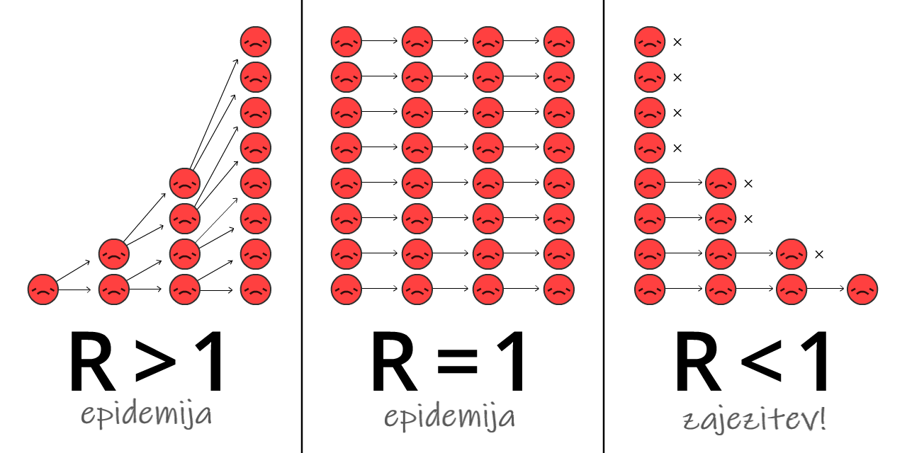
R se med izbruhom spremeni, saj sčasoma pridobimo imunost in sprejmemo ustrezne ukrepe.
R<sub>0</sub> (izgovarjamo R-nič) predstavlja R na začetku izbruha, torej pred imunostjo in ukrepi. R<sub>0</sub> natančneje odraža moč virusa, vendar se le-ta še vedno spreminja od mesta do mesta. Na primer: R<sub>0</sub> je višji v gosteje naseljenih mestih kakor v redkih podeželskih območjih.
(V večini novic, celo v nekaterih raziskovalnih člankih, pride do zmede zaradi zamenjave R in R<sub>0</sub>. Znova je potrebno poudariti, da je znanstvena terminologija zares slaba.)
R<sub>0</sub> za t.i. »sezonsko gripo« znaša približno 1,28[8]. To pomeni, da na začetku izbruha gripe vsak v povprečju okuži 1.28 drugih ljudi. (Če morda komu to, da to ni celo število, zveni nenavadno, ne pozabite, da ima “povprečna” mama 2,4 otroka. To pa seveda ne pomeni, da okoli teka polbrat.)
Predvideva se, da bo vrednost R<sub>0</sub> za COVID-19 znašala približno 2,2,[9] vendar sicer še nedokončana študija v Wuhanu znaša 5,7![10]
V naših simulacijah oseba na začetku v povprečju okuži nekoga drugega vsake 4 dni ter to počne več kot 10 dni. “4 dnevi” grejo v “10 dni” dva in pol krat. To pomeni, da vsaka oseba na začetku v povprečju okuži 2,5 drugih oseb. Zato je potemtakem R<sub>0</sub> = 2,5. (opozorila: [11])
Preizkusi R<sub>0</sub> kalkulator, ki prikazuje, kako R<sub>0</sub> vpliva na čas zdravljenja in čas, v katerem pride do nove infekcije:
<div class=“sim”>
<iframe src=“sim?stage=epi-6a&format=calc” width=“285” height=“255”></iframe>
</div>
Ne pozabite, manj kot je <icon s></icon>, počasnejši postanejo <icon i></icon>. Trenutno reprodukcijsko število ® ni odvisno samo od osnovnega reprodukcijskega števila (R<sub>0</sub>), ampak tudi od tega, koliko ljudi ni več <icon s></icon> dovzetnih. (Na primer: Nekateri ozdravijo in pridobijo naravno imunost.)
<div class=“sim”>
<iframe src=“sim?stage=epi-6b&format=calc” width=“285” height=“390”></iframe>
</div>
Ko je dovolj ljudi imunih, je R < 1 in virus je moč obvladovati! Temu pravimo čredna imunost. Čredno imunost pri gripi dosežemo s cepivom. Ideja o tem, da bi “naravno imunost črede” dosegli tako, da bi se ljudje okužili, je grozljiva. (Vendar ne iz razloga, za katerega morda mislite! Pojasnilo sledi kasneje.)
Znova uporabimo Model SEIR, vendar sedaj prikažimo R<sub>0</sub>, R skozi čas in mejo čredne imunosti:
<div class=“sim”>
<iframe src=“sim?stage=epi-7” width=“800” height=“540”></iframe>
</div>
OPOMBA: Skupni primeri se pri imuniteti črede ne ustavijo, temveč mejo presežejo! To se zgodi točno takrat, ko trenutni primeri dosežejo vrhunec. (Do tega pride ne glede na to, kako spremenite nastavitve – poskusite sami!)
Temu je tako, ker v primeru, ko je več <icon s></icon> kot je meja imunosti črede, dobite R < 1. In ko je R < 1, novi primeri prenehajo rasti: pride do vrhunca.
Če boste iz tega priročnika odnesli le eno lekcijo, je to sledeča - pred vami je izredno zapleten diagram, zato si prosim vzemite čas, da ga boste popolnoma razumeli:
To pomeni: za zaustavitev COVID-19 nam NI potrebno ujeti večine, kaj šele vseh prenosov!
To je paradoks. COVID-19 je izjemno nalezljiv, kljub temu pa moramo ustaviti “le” nekaj več kot 60% okužb. 60% ?! Če bi bila to šolska ocena, je to zadostno(2). Če pa je R<sub>0</sub> = 2,5, sledi, da za 61% zmanjšamo R = 0,975. Potem je R < 1 in virus je obvladljiv, saj je tako rekoč omejen! (natančna formula: [12])
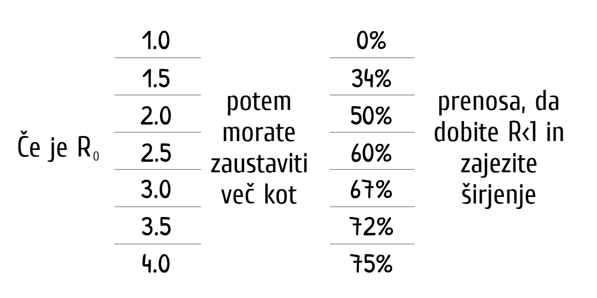
(Če menite, da so R<sub>0</sub> ali druge številke v naših simulacijah prenizke/previsoke, je to odlično, saj tako izpodbijate naše predpostavke! Na koncu tega priročnika bo na voljo “način peskovnika”, kjer lahko priključite svoje številke in simulirajte, kaj se zgodi.)
Vsak poseg glede COVID-19, za katerega ste slišali - pranje rok, socialno/fizično distanciranje, zaprtja, samoizolacija, sledenje stikom in karantena, maske za obraz, celo “imuniteta črede” - vsi počnejo popolnoma isto:
Pridobivajo R < 1.
Sedaj uporabimo naš “simulator epidemije letenja”, da ugotovimo sledeče: Kako lahko dobimo R < 1 na način, ki ščiti tudi naše duševno in finančno zdravje?
Pripravite se na zasilni pristanek…
…lahko bi bilo huje. V nadaljevanju sledi prikaz vzporednega sveta, kateremu smo se uspeli izogniti:
###Scenarij 0: Ne naredite popolnoma ničesar
Približno eden izmed 20 ljudi, ki so okuženi s COVID-19, se mora odpraviti na oddelek za intenzivno nego.[13] V bogatih državah, kot so na primer ZDA, 1 oddelek za intenzivno nego premore le 1 ležišče za kar 3400 ljudi.[14] Zato lahko ZDA hkrati sprejmejo le 20 izmed 3400 okuženih ljudi – oziroma 0,6% prebivalstva.
Tudi če bi to vrednost več kot potrojili na 2%, nam spodnja simulacija prikazuje, kaj bi se zgodilo, če ne bi storili absolutno ničesar:
<div class=“sim”>
<iframe src=“sim?stage=int-1&format=lines” width=“800” height=“540”></iframe>
</div>
Slabo kaže…
Britanska fakulteta je 16. marca (the March 16 Imperial College report) prišla do sledeče ugotovitve: Ne naredimo ničesar in se posledično spopadajmo s problemom premajhnega števila ležišč na oddelkih intenzivne nege, saj se je do sedaj okužilo več kot 80% prebivalstva.
(ne pozabite: skupni primeri prekoračijo imuniteto črede)
Tudi če umre le 0,5% okuženih – velikodušna domneva, ko ni več možnosti oskrbe na oddelku za intenzivno nego – v veliki državi, kot je ZDA, s 300 milijoni ljudi, 0,5% od 80% od 300 milijonov = še vedno 1,2 milijona mrtvih… ČE nismo naredili ničesar.
(Številne novice in mediji so poročali le “80% okuženih” brez, da bi temu priključili še “ČE NISMO NAREDILI NIČESAR”. Strah je bil usmerjen v klike, ne pa v razumevanje. Vzdih.)
###Scenarij 1: Izravnajte krivuljo / Imuniteta črede
Načrt “Izravnati krivuljo” je bil predstavljen s strani prav vsake izmed javnih zdravstvenih organizacij, medtem ko je bil prvotni načrt Združenega kraljestva, imenovan “imuniteta črede”, splošno razglašen. Šlo je za enak načrt. Razlika je le v tem, da je Združeno kraljestvo svoj načrt sporočilo slabo in površno.[15]
Oba načrta pa sta imela dobesedno usodno napako.
Najprej si oglejmo dva glavna načina za “zravnanje krivulje”: pranje rok in fizično distanciranje.
Povečano pranje rok je v državah z visokim dohodkom zmanjšalo zaščito pred prehladom in mrazom za ~25%[16], medtem ko je mestno zaprtje v Londonu tesne stike zmanjšalo za ~70%[17]. Predpostavimo lahko, da lahko pranje rok R zmanjša za do 25%, distanciranje pa do 70%:
Preizkusite spodnji kalkulator in videli boste, kako delež <icon s></icon>, pranje rok in distanciranje zmanjšajo R: (kalkulator predstavlja njihove relativne učinke, zato izgleda kakor, da povečanje enega izmed njih zmanjša učinek drugih.[18])
<div class=“sim”>
<iframe src=“sim?stage=int-2a&format=calc” width=“285” height=“260”></iframe>
</div>
Sedaj simulirajmo, kaj bi se zgodilo z epidemijo COVID-19, če bi od marca 2020 dalje imeli le povečano pranje rok, fizično distanciranje pa bi ostalo v (pre)blagi obliki – R je tako nižji, vendar še vedno nad 1:
<div class=“sim”>
<iframe src=“sim?stage=int-2&format=lines” width=“800” height=“540”></iframe>
</div>
Tri opombe:
-
To zmanjšuje skupno število primerov! Četudi ne dobite R < 1, nižanje R na način, da poskušamo zmanjševati ‘prekoračitve’ nad imunostjo črede, še vedno rešuje življenja. Večina ljudi misli, da načrt “Izravnati krivuljo” le širi primere, ne da bi pri tem zmanjšali celoto. Vendar to ni mogoče v nobenem epidemiološkem modelu. Ker pa so novice kot neizogibno dejstvo poročale, da bo “okuženih več kot 80% ljudi”, so ljudje posledično mislili, da bodo skupni primeri enaki ne glede na vse. Vzdih.
-
Zaradi dodatnih ukrepov trenutni primeri dosežejo vrhunec preden se doseže imuniteta črede. Dejansko v tej simulaciji skupni primeri le premaknejo majhen delček nad imuniteto črede – gre za načrt Združenega kraljestva! Na tej točki, kjer je R < 1, lahko opustite vse druge ukrepe in virus nam je uspelo uspešno zajeziti! Srečamo se le z eno težavo…
-
Še vedno vam primanjkuje enot za intenzivno nego. In to za kar nekaj mesecev. (in ne pozabite, za te simulacije smo enote za intenzivno nego že potrojili)
To je bila druga ugotovitev poročila britanske fakultete (16. marec), ki je Združeno kraljestvo uspelo prepričati, da opusti svoj prvotni načrt. Prepričani so bili, da bo vsak poskus blaženja (zmanjšati R, vendar vseeno ohraniti R < 1) spodletel. Tako rekoč je preostal le izhod v sili, in sicer zaviranje virusa (zmanjšati R tako, da je R < 1).
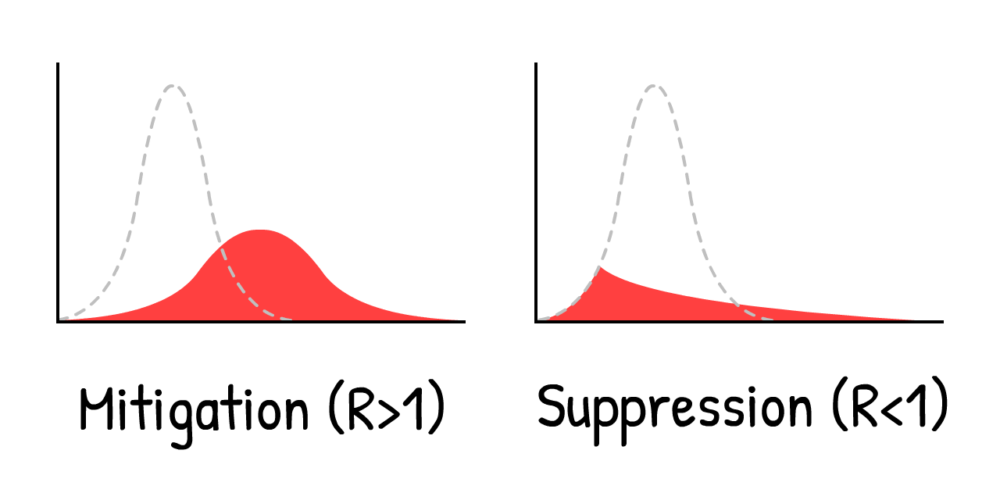
Se pravi, krivulje ne le “izravnajte”, potrebno jo je zdrobiti. Na primer, z…
###Scenarij 2: Nekaj mesečno zaprtje
Poglejmo, kaj se zgodi, če krivuljo zatremo s 5-mesečnim zaprtjem, <icon i></icon> zmanjšamo skoraj na nič, nato pa se končno vrnemo v normalno življenje:
<div class=“sim”>
<iframe src=“sim?stage=int-3&format=lines” width=“800” height=“540”></iframe>
</div>
Ojej.
Gre za “drugi val” o katerem že vsi govorijo. Takoj ko odstranimo zaprtje, ponovno dobimo R > 1. Torej lahko en sam izpuščen <icon i></icon> (ali uvožen <icon i></icon>) povzroči konico v primerih, ki so skoraj tako slabi, kot če bi se soočili s scenarijem 0: Absolutno nič.
Zaprtje ni zdravilo, je le ponovni zagon.
Torej se znova in znova le zapiramo?
###Scenarij 3: Občasno zaprtje
To rešitev je sprva 16. marca predlagalo poročilo britanske fakultete, kasneje pa še listina Harvard.[19]
Absent other interventions, a key metric for the success of social distancing is whether critical care capacities are exceeded. To avoid this, prolonged or intermittent social distancing may be necessary into 2022.
Tukaj je simulacija: (Po predvajanju “posnetega scenarija” lahko poskusite simulirati svoj urnik zaprtja tako, da spremenite drsnike, medtem ko simulacija teče! Ne pozabite, da lahko zaustavite in nadaljujete simulacijo ter spremenite njeno hitrost.)
<div class=“sim”>
<iframe src=“sim?stage=int-4&format=lines” width=“800” height=“540”></iframe>
</div>
To bi primere ohranilo pod zmogljivostjo enot za intenzivno nego, kar je veliko bolje, kot 18-mesečna popolna zaustavitev, dokler na voljo ne bi bilo cepivo. Za nekaj mesecev moramo uvesti zaprtje, nato ponovno odpreti za nekaj mesecev in to potem ponavljati, dokler ne bo cepivo na voljo. (In če cepiva še kar ni, to ponavljajte, dokler ne dosežete imunosti črede … torej do leta 2022.)
Poglejte, naravnost čudovito je narisati črto, ki predstavlja “zmogljivost enot za intenzivno nego”, vendar se tukaj srečamo še z veliko ostalimi pomembnimi stvarmi, ki pa jih tukaj ne moremo simulirati. Mednje štejemo:
Duševno zdravje: Osamljenost je eden največjih dejavnikov tveganja za depresijo, tesnobo in samomor. To bi lahko primerjali s kajenjem 15 cigaret na dan, kar prav tako privede do zgodnje smrti.[20]
Finančno zdravje: “Kaj pa gospodarstvo?” zveni, kot da vas bolj kot za življenja skrbi za denar. Vendar “ekonomija” ni le zaloga: gre za sposobnost ljudi, da lahko svojim najdražjim zagotovijo hrano in streho nad glavo, da imajo možnost vlagati v prihodnost svojih otrok in preprosto uživajo v umetnosti, hrani, videoigrah – v glavnem v tistem, zaradi česar je življenje vredno živeti. Poleg tega je vredno omeniti, da revščina sama po sebi strahotno vpliva na duševno in fizično zdravje.
Ne pravimo, da smo proti ponovnemu zaprtju! Kasneje si bomo ogledali zaprtje, ki ga bomo poimenovali “varnostno stikalo”. Kljub vsemu, ne gre za idealen način zaprtja.
Vendar pozor… Ali se nista Tajvan in Južna Koreja že pred časom srečala s COVID-19? 4 cele mesece brez dolgotrajnega zaprtij?
Kako?
###Scenarij 4: Test, sled, izolacija
"Seveda, tudi mi *bi lahko\ naredili tisto, kar sta Tajvan in Južna Koreja storila že na začetku, vendar je sedaj že prepozno. Zamudili smo začetek."*
Ampak gre ravno za to! “Zaustavitev ni zdravilo, je le ponovni zagon”… in vse, kar potrebujemo, je nov začetek.
Da bi razumeli, kako sta se Tajvan in Južna Koreja znali spopadati s COVID-19, moramo razumeti natančen časovni trak tipične okužbe s COVID-19[21]:
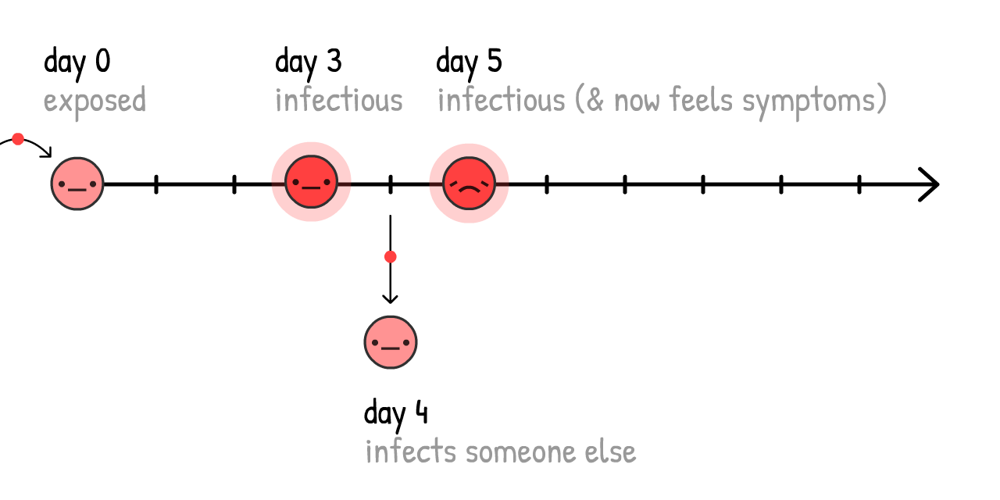
Če se primeri samoizolirajo, ko že vedo, da so bolni (torej, ko čutijo simptome), se virus lahko še vedno širi:
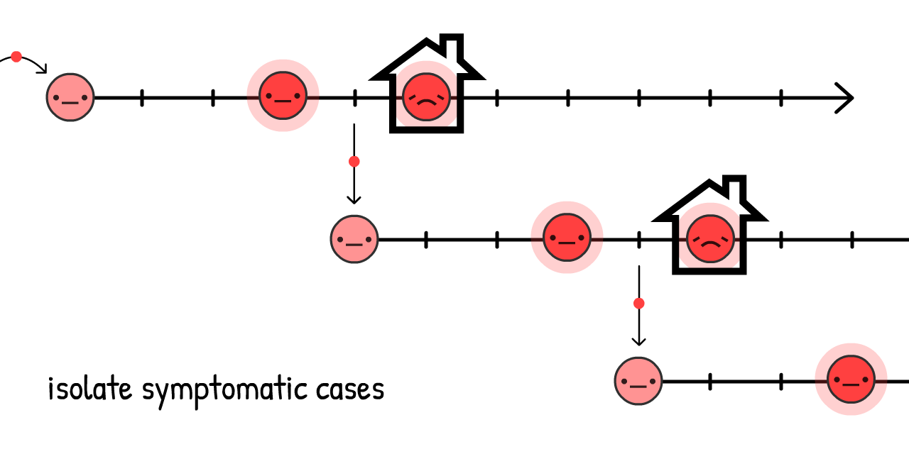
In v resnici je 44% vseh prenosov prav takšnih: predsimptomatskih! [22]
Vendar, če najdemo in damo v karanteno ljudi, ki so bili še nedavno v tesnejših stikih in imajo simptome virusa, lahko tako širjenje virusa ustavimo in ostanemo korak spredaj!
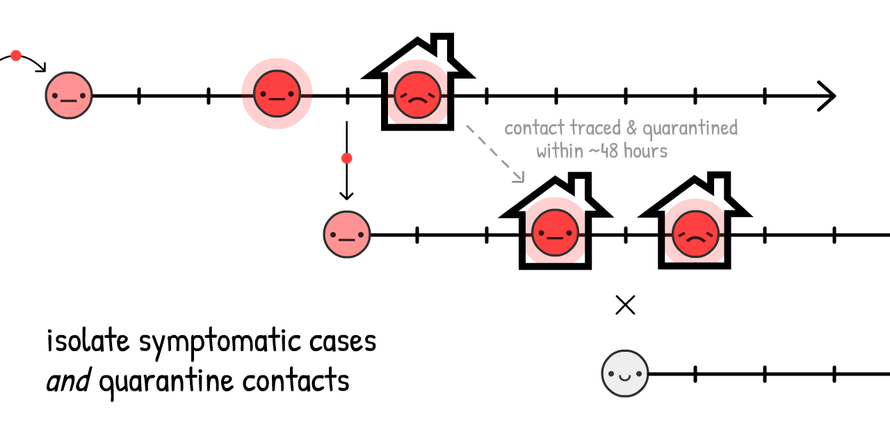
Temu pravimo sledenje stikov. Gre za starejšo idejo, ki je bila v neprimerljivem obsegu uporabljena za obvladovanje ebole[23], sedaj pa se pri zajezitvi COVID-19 po njej zgledujeta predvsem Tajvan in Južna Koreja!
(Omogoča nam tudi učinkovitejšo uporabo naših omejenih testov za iskanje predsimptomatskih <icon i></icon>, ne da bi bilo pri tem potrebno testirati skorajda vse.)
Navadno je stike moč najti z osebnimi pogovori, vendar so v našem primeru le ti sami prepočasni za t.i. 48-urno okno COVID-19. Zaradi tega sledilci stikov še kako potrebujejo pomoč, pri čemer pridejo v poštev (in NE v nadomestilo) aplikacije za sledenje stikov.
(Ta ideja ni prišla s strani računalničarjev: uporaba aplikacije za boj proti COVID-19 je bila sprva predlagana s strani ekipe Oxford-skih epidemiologov.)
Čakaj, aplikacije, ki beležijo s kom si bil v stiku? … Ali to pomeni, da se odrekamo zasebnosti in jo dajamo “Velikemu bratu”?
Seveda ne! DP-3T,
skupina epidemiologov & kriptografov (including one of us, Marcel Salathé) že delajo na tej aplikaciji –
z javno dostopno kodo – ki ne razkrije nobenih informacij o tvoji identiteti, lokaciji, s kom
ali celo s koliko ljudmi si bil v stiku.
Tako deluje:
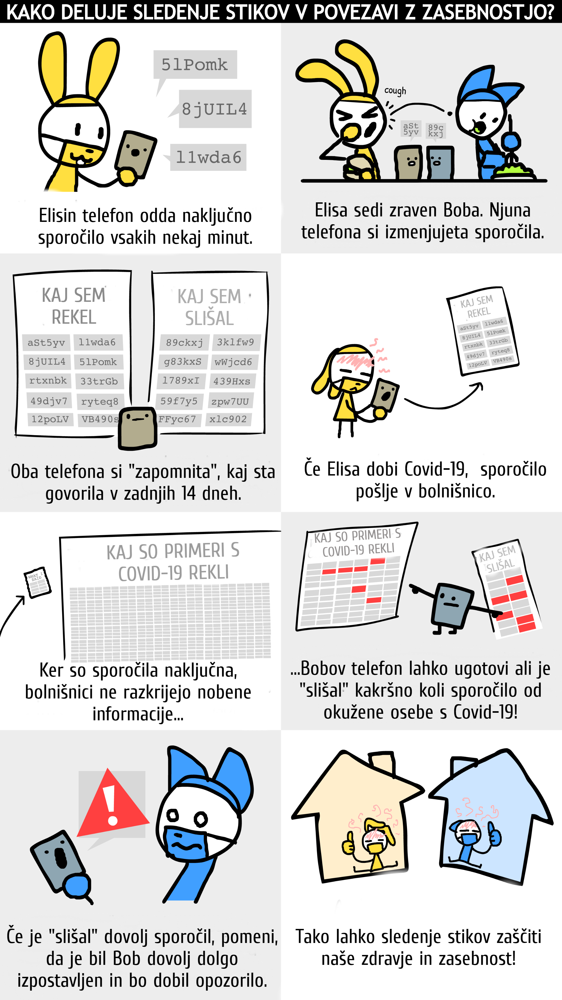
Skupaj s podobnimi skupinami kot so TCN Protocol[24] in MIT PACT[25], so navdihnili podjetji Apple & Google
za vnos sledenja stikov, katerih prioriteta je varovanje zasebnosti neposredno v sistem Android/iOS.[26]
(Ne zaupaš Google-u/Apple-u? Dobro! Lepota sistema je, da ne potrebuje zaupanja.
Kmalu bo lokalna zdravstena agencija morda predlagala, da jo preneseš. Če je prioriteta aplikacije varovanje zasebnosti z javno dostopno kodo,
jo, prosim, prenesi!
Kaj pa ljudje brez pametnih telefonov? Ali pa okužbe preko “vratnih kljuk”? Ali “popolnoma” asimptomatski primeri? Aplikacije sledenja stikov ne morejo prestreči vseh prenosov … Kar je čisto V redu! Ni nam treba prestreči vseh, vsaj 60%, da je R < 1.
(razburjanje glede zmede med pre-simptomatskimi in popolnoma asimptomatskimi. Slednji so redki:[27])
Izolacija simptomatskih primerov bi znižala R do 40 %, and karantenizacija njihovih pre/a-simptomatičnih stikov bi znižala R vse do 50 %[28]:
<div class=“sim”>
<iframe src=“sim?stage=int-4a&format=calc” width=“285” height=“340”></iframe>
</div>
Zatorej, četudi se nena 100% stikov osami, lahko dobimo R < 1 brez karantene! Veliko boljše za naše mentalno & finančno zdravje.
(Kar se tiče stroškov za ljudi, ki se morajo samoosamiti / karantenizirati, vlada bi jih morala podpreti – plačati teste, preprečiti izgubo službe, subvencionirati plačani dopust, etc. Še vedno veliko cenejša od karantene.)
Potem ohranjamo R < 1 until dokler nimamo zdravila, ki spremeni dovzetne <icon s></icon> v imune <icon r></icon>. Imuniteta črede, tokrat na pravi način:
<div class=“sim”>
<iframe src=“sim?stage=int-4b&format=calc” width=“285” height=“230”></iframe>
</div>
(Pomni: ta kalkulator privzema, da je zdravilo 100% učinkovito. Ne pozabi, da v realnosti bomo morali kompenzirati cepljenje več kot “čredne imunosti”, da dejansko dobimo čredno imunost)
Dobro, dovolj govorjenja. Tukaj je simulacija za:
- Nekaj mesečno karanteno, dokler ne …
- Preklopimo na “Testiraj, Izsledi, Izoliraj” dokler ne…
- cepimo dovolj ljudi, kar pomeni…
- Zmagali smo.
<div class=“sim”>
<iframe src=“sim?stage=int-5&format=lines” width=“800” height=“540”></iframe>
</div>
Torej, to je to! Tako izvedemo zasilni pristanek na tem letalu.
Tako premagamo COVID-19.
…
Kaj pa, če gredo stvari še vedno narobe?
Stvari so že potekale zelo narobe. To je strah in to je dobro! Strah nam da energijo, da ustvarimo rezervne načrte.
Pesimist izumi padalo.
###Scenarij 4+: Maske za vse, poletje, varnostno stikalo
Kaj če je R<sub>0</sub> veliko višji kot smo predvideli, in zgornji posegi, tudi z blagim distanciranjem, še vedno niso dovolj, da dobimo R < 1?
Ne pozabi,
tudi če ne moremo dobiti R <1, zmanjšanje R še vedno zniža “presežek” v skupnih primerih, kar reši življenja.
Kljub temu je R <1 idealen, zato je tu še nekaj načinov za zmanjšanje R:
Maske za vse:
“Čakaj,” mogoče se boš vprašal, “obrazne maske ne preprečijo, da zboliš?”
Prav imaš. Maske ne preprečijo, da zboliš[29]… preprečijo ti, da okužiš ostale.
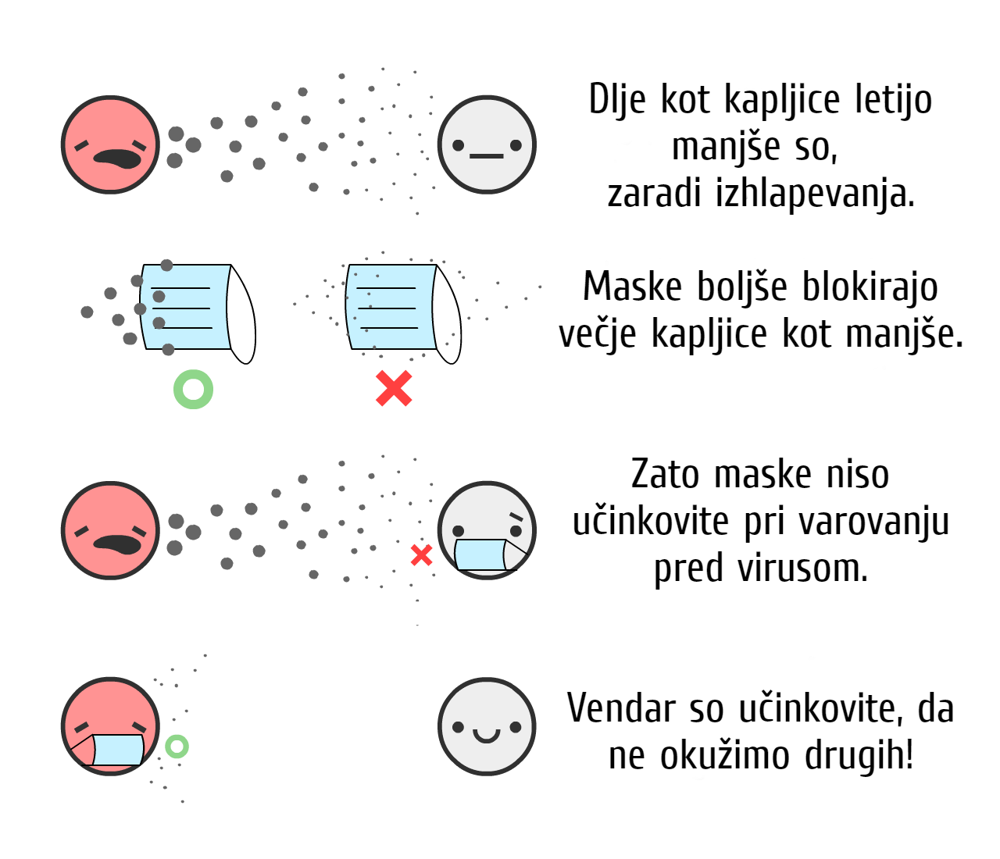
Predstavljeno v številkah: kirurška maska na zboleli osebi zmanjša prenos virusa pri prehladu & gripi preko zraka do 70 %.[30] Zmanjšanje prenosov za 70 % bi imelo tako velik vpliv kot karantena!
Vseeno, ne vemo zagotovo kakšen vpliv imajo maske pri virusu COVID-19 specifično. V znanosti, se ugotovitev lahko objavi samo, če je gotovost 95 %. (…lahko.[31]) Maske imajo, od 1. maja 2020, manjšo zanesljivost od 95 %.
Vsak dejanski znanstvenik, ki je prebral zadnji stavek, se verjetno trenutno smeje-joče. Glej: p-hacking, kriza podvajanja)
Pandemija je kot poker. Če staviš zgolj, ko si 95% prepričan, boš izgubil vse. Kot ugotavlja nedavni članek o maskah v Britanskem medicinskem časopisu,[32] moramo sprejemati cena/korist analize glede na negotovost. Kot so:
Cena: V primeru doma izdelanih iz blaga (ki so približno 2/3 tako efektivne kot kirurške maske [33]) je cena zelo ugodna. V primeru kirurških mask je cena višja, a še vedno precej ugodna.
Korist: Tudi, če je možnost, da kirurške maske znižajo prenos za 0 % ali 70 %, 50 %, je povprečna “pričakovana vrendnost” še zmeraj 35 %. Tako kot polovična karantena! Torej ugibajmo, da kirurške maske znižajo R za največ 35%, zaradi negotovosti. (Ponovno, lahko preveriš naše predpostavke s premikanjem drsnikov gor ali dol)
<div class=“sim”>
<iframe src=“sim?stage=int-6a&format=calc” width=“285” height=“380”></iframe>
</div>
(ostali argumenti za/proti maskam:[34])
“Težko jih je nositi pravilno.” Prav tako si je težko umivati roke v skladu s smernicami WHO – resno, "korek 3.) Dlan desne roke preko hrbtišča leve?! – Vseeno še vedno priporočamo umivanje rok, saj je nepopolno še zmeraj bolje kakor nič.
“Ljudje bodo bolj nepremišljeni pri umivanju rok in socialem distanciranju.” Kakopak! Zaradi varnostnih pasov ljudje tudi ignorirajo stop znake, prav tako zaradi nitkanja ljudje jedo kamenje. Zdaj pa zares, zavzemali bi se za nasprotno: maske so neprestani fizični opomnik, da moramo biti previdni – V Vzhodni Aziji so celo simbol solidarnosti.
Maske same ne bodo privedle do R < 1. Toda, če nas umivanje rok in “Testiraj, Izsledi, Izoliraj” pride zgolj do R = 1.10, bi z nošo mask 1/3 ljudi dosegli R < 1 in virus obvladali!
Poletje:
Ok, to ni “intervencija”, ki jo lahko nadzorujemo, lahko pa pomaga! Nekatere novice poročajo, da poletje COVID-19 ne bo ničesar storilo. Imajo deloma res: poljetje ne bo zagotovilo R < 1, ampak ga bo zmanjšalo R.
Pri COVID-19, vsaka dodatna 1 °C (2,2 ° Fahrenheit) povzroči upad R za 1,2 %.[35]
Temperaturna razlika poletje-zima je v New Yorku 15 ° C (60 °F), torej bo s poletjem upad R za 18 %.
<div class=“sim”>
<iframe src=“sim?stage=int-6b&format=calc” width=“285” height=“220”></iframe>
</div>
*Poletje samo ne bo doseglo R < 1, če pa imamo omejene vire, we can scale back some interventions in the summer – so we can scale them higher in the winter.
** “Varnostno stikalo” - karantena:**
In če vse to še vedno ni dovolj, da dobimo R < 1… lahko ponovno uvedemo karanteno.
*Ampak ne bo nam treba biti 2-mesca-zaprti / 1-mesec-odprti znova & znova! Ker R je zmanjšan, we’d only need one or two more “circuit breaker” lockdowns before a vaccine is available. (Singapore je moral to narediti pred kratkim, “kljub” temu da je COVID-19 bil pod kontrolo 4 mesece. To ni neuspeh: to je “cena, ki jo moraš plačati”, da zmagas.)
Tu je simulacija “lenega primera” scenarija:
- Karantena, potem
- Zmerna količina higiene & “Testiraj, Izsledi, Izoliraj” z blago zalogo “Maske za vse”, potem…
*3. Samo še eno “circuit breaker” lockdown pred iznajdbo cepiva.
<div class=“sim”>
<iframe src=“sim?stage=int-7&format=lines&height=620” width=“800” height=“620”></iframe>
</div>
Da ne omenjam vseh ostalih intervencij, ki še dodatno znižajo R:
- Omejitve potovanj/karantene
- Preverjanje temperature v trgovskih centrih & šolah
- Temeljito čiščenje javnih površin
- Nadomestimo rokovanje z brco nog
- In vse ostalo kar prinese človeška iznajdljivost
. . .
Upamo, da smo ti s temi načrti vlili upanje.
Tudi po pesimističnem scenariju, je mogoče premagati COVID-19 in hkrati zaščititi našo mentalno in finančno zdravje. Glej na zaprtje kot “reset button”, vzdržujmo R < 1 izolacijo okuženega + pogodbo o varovanju zasebnosti sledenja + ter vsaj maske iz blaga za vse… in življenje lahko ponovno postane normalno!
Seveda, morda imaš izsušene roke, ampak boš lahko zaradi tega lahko povabil partnerja v knjigarno stripov! Lahko boš šel ven s prijatelji gledat najnovejši hollywood-ski “cash-grab”. Lahko boš opazoval ljudi v knjižnici, užival ob podjetništvu preprostih ljudi, ki mu enostavno rečemo živeti.
Celo v najhujšem primeru … Se življenje ohrani.
Zatorej se zdaj pripravimo na najhujše možne primere. Pristanek na vodi, vzami svoj rešilni jopič in, prosim, sledi lučkam do zasilnih izhodov:
Stakneš virus COVID-19, in si opomoreš, ali pa se proti njemu cepiš. V vsakem primeru si zdaj imun …
…A kako dolgo?
“”
- Virus COVID-19 je najbolj podoben virusu SARS, ki je dal “svojim” preživelim 2 leti imunosti.[^SARS immunity]
- Corona virusi, ki so vzrok za navaden prehlad, nudijo le 8 mesecev imunosti.[^cold immunity]
- Obstajajo poročila ljudi, ki so preboleli COVID-19, potem pa bili pozitivni. Je pa neznano, če so testi lažno pozitivni.[36]
- Ena “nestrokovno pregledana” raziskava na opicah je pokazala imunost na COVID-19 za vsaj 28 let.[37]
Pri ljudeh je ,od 1. maja 2020, ta doba en velik vprašaj.
[^SARS immunity]: “Specifična protitelesa za SARS so se v povprečju ohranila 2 leti […] Zatorej so SARS pacienti morebiti dovzetni za ponovno okužbo po več kot 3 letih po prvotnem izpostavljenju.” Wu LP, Wang NC, Chang YH, et al. “Na žalost” ne bomo nikoli vedeli kako dolgo bi SARS imunost resnično trajala, saj smo se ga znebili tako hitro.
[^cold immunity]: “Nismo našli nikakršne signifikantne razlike med verjetnostjo vsaj enkrat pozitivnega testa in verjetnostjo ponovnega pojava Beta-Corona virusa HKU1 in OC43 34 tednov po prvi okužbi.” Marta Galanti & Jeffrey Shaman (PDF)
Za te simulacije recimo, da je 1 leto.
Tu je simulacija, začenši s 100% <icon r></icon>, Po 1 letu v povpečju eksponentno pada v dovzetne, neimune <icon s></icon>, z variacijo:
<div class=“sim”>
<iframe src=“sim?stage=yrs-1&format=lines&height=600” width=“800” height=“600”></iframe>
</div>
Vrnimo se na eksponentni upad!
To je SEIRS Model. Zadnji “S” pomeni <icon s></icon> Susceptible (dovzetno).
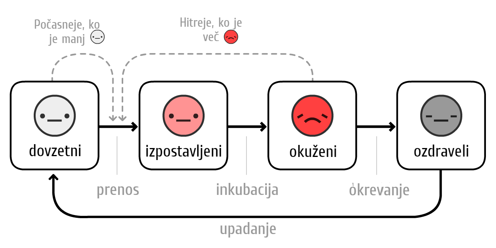
Zdaj pa simulirajmo izbruh virusa COVID-19 v obdobju več kot 10 let brez ukrepov … Če imunost traja le leto dni:
<div class=“sim”>
<iframe src=“sim?stage=yrs-2&format=lines&height=600” width=“800” height=“600”></iframe>
</div>
V prejšnjih simulacijah smo imeli le en sunek preobremenitve na intenzivni negi spike. Zdaj pa jih imamo več, in <icon i></icon> primeri se zaključijo pri kapaciteti oddelka za intenzivno nego. (Ki smo jih potrojili za to simulacijo)
R = 1, endemično.
K sreči, poletje oz višje temperature zmanjšujejo R, zato se bo stanje izboljšalo:
<div class=“sim”>
<iframe src=“sim?stage=yrs-3&format=lines&height=640” width=“800” height=“640”></iframe>
</div>
Oh.
Counterintuitively, summer makes the spikes worse and regular! To je zato, ker poletje zmanjšuje nove <icon i></icon>s, vendar to posledično zmanjšuje novo imunost <icon r></icon>s. Kar pomeni, da imuniteta poleti pade, torej ustvari nove large regular spikes in the winter.
Na srečo je rešitev za to preprosta - ljudi je potrebno vsako jesen/zimo cepiti, tako kot pri gripi:
(Po predvajanju posnetka poskusite simulirati lastne akcije cepljenja! Ne pozabite, da lahko sim začasno zaustavite/nadaljujete s sim)
<div class=“sim”>
<iframe src=“sim?stage=yrs-4&format=lines” width=“800” height=“540”></iframe>
</div>
Toda tukaj se pojavi bolj strašno vprašanje:
Kaj pa če cepiva ne bo več let? Ali nikoli?
Da bo jasno: to malo verjetno. Večina epidemiologov pričakuje cepivo čez 1 do 2 leti. Seveda, še nikoli ni bilo cepiva za katerega koli od drugih koronavirusov, toda to je zato, ker je bil SARS hitro izkoreninjen in “navadni prehlad” ni bil vreden naložbe.
Kljub temu so raziskovalci nalezljivih bolezni izrazili zaskrbljenost: What if we can’t make enough?[38] What if we rush it, and it’s not safe?[39]
Even in the nightmare “no-vaccine” scenario, we still have 3 ways out. From most to least terrible:
Tudi v najslabšem scenariju “brez cepiva” imamo še vedno 3 poti. Od najbolj do najmanj groznega scenarija:
-
Izvedemo občasne ali ohlapne R<1 ukrepe, da dosežemo naravno imunost ljudi. (Opozorilo: To bo povzročilo veliko srtnih žtev in poškodovanih pljuč pri ljudeh. In ne bo delovalo, če imuniteta ne bo trajala.)
-
Naredimo R<1 ukrepe za vedno. Sledenje stikov & nošenje mask postane nova norma v svetu po COVID-19, denimo kot so testi STI in nošenje kondomov postali nova norma v svetu po HIV.
-
Naredimo R<1 ukrepe, dokler ne razvijejo zdravljenja za COVID-19, po katem je manj verjetno, da bi ljudje potrebovali intenzivno nego. (Kar bi morali storiti kljub vsemu!) Zmanjšanje uporabe ICU za 10x je isto kot povečanje naše zmogljivosti ICU za 10x:
Tu je simulacija ne trajne imunosti, brez cepiva in niti nobenega posega
<div class=“sim”>
<iframe src=“sim?stage=yrs-5&format=lines” width=“800” height=“540”></iframe>
</div>
Tudi v najslabšem najslabšem primeru … življenje vztraja.
. . .
Morda dvomite v naše predpostavke in bi jih želeli izpodbiti. Preizkusite lahko različne R<sub>0</sub> ali številke ter celo poskusite simulirati svojo kombinacijo intervencijskih načrtov!
Pred vami je (izbiren) t. i. način peskovnika, ki ima na voljo prav vse. (pomaknite se nižje in si oglejte vse krmilne tipke) Simulirajte in igrajte se kolikor dolgo želite:
<div class=“sim”>
<iframe src=“sim?stage=SB&format=sb” width=“800” height=“540”></iframe>
</div>
Še tako osnovni “simulacija epidemičnega poleta” nas je naučil ogromno. Dovolite nam odgovoriti na vprašanja glede zadnjih nekaj mesecev, naslednjih nekaj mesecev in naslednjih nekaj let.
Torej, končno se vrnimo k…
Letalo je potonilo. Naleteli smo na rešilne splave in čas je, da poiščemo suho zemljo.[40]
Skupine epidemiologov in oblikovalcev politike (leve, desne in večstranske) so dosegle soglasje o tem, kako premagati COVID-19 in hkrati zaščititi naša življenja ter svoboščine.
Tukaj je skica ideje z nekaj (manj soglasnimi) rezervnimi načrti:
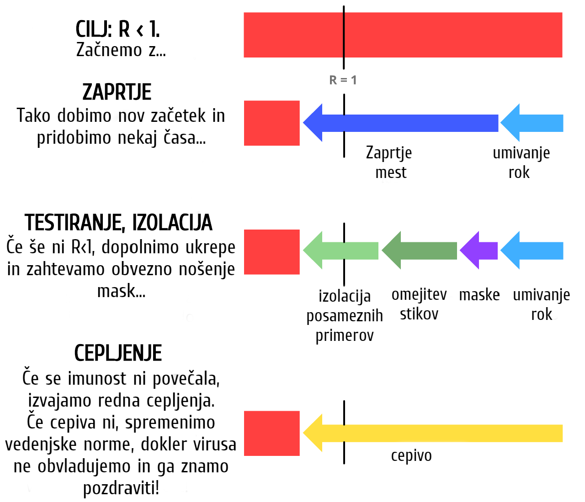
Torej, kaj trenutno to pomeni ZATE?
Za vse: Spoštujte zaprtje, da bomo lahko takoj stopili iz faze I. Še naprej si umivajte roke, izdelajte si svoje maske, prenesite si aplikacijo za sledenje stikov, ki ščiti zasebnost (ko bo le-ta na voljo v naslednjem mesecu). Ostanite zdravi, tako fizično kot tudi psihično! Svojim krajevnim oblikovalcem politike pa sporočite, da je lenobe dovolj in…
Za oblikovalce politike: Sprejmite zakone za podporo vsem ljudem, ki so bili prisiljeni v samoizolacijo. Najemite več ročnih sledilnikov stikov, ki jih podpirajo aplikacije za sledenje stikov. Več sredstev usmerite v stvari, ki bi jih morali graditi, kot na primer…
Za gradbenike: Gradite preizkuse. Gradite ventilatorje. Gradite osebno zaščitno opremo za bolnišnice. Gradite teste. Gradite maske. Gradite aplikacije. Gradite protivirusna sredstva, preventivna sredstva ter druge načine zdravljenja, ki niso cepiva. Gradite teste. Gradite teste. Gradite teste. Gradite upanje.
Ne omalovažujte strahu, da bi povečali vaše upe. Naš strah bi se moral združiti z našim upanjem tako kot izumitelji letal in padal. Priprava na grozno prihodnost nam v bistvu ustvari upanja polno prihodnost.
Ideja, da nas mora biti strah le strahu samega, je edina, česar se moramo resnično bati.
Te sprotne opombe bodo imele vire, povezave ali dodatne komentarje. Tako kot ta komentar!
Ta vodič je bil objavljen 1. maja 2020 Številne podrobnosti bodo zastarele, ampak sva prepričana, da bo ta vodič zajel 95% verzij prihodnosti, da bo knjiga Epidemiology 101 za vedno ostala uporabna. ↩
“Povprečni [serijski] interval je bil 3.96 dni (95% CI 3.53–4.39 dni)”. Du Z, Xu X, Wu Y, Wang L, Cowling BJ, Ancel Meyers L (Disclaimer: Članki z zgodnjo izdajo se ne štejejo v končne različice) ↩
Ne pozabite: vse te simulacije so zelo poenostavljene zaradi izobraževalnih namenov.
Ena poenostavitev: Ko ukažete tej simulaciji “Okužite 1 novo osebo vsakih X dni”, se dejansko vsak dan poveča število okuženih za 1 / X. Enako za prihodnje nastavitve v teh simulacijah – “Ozdravi vsakih X dni” dejansko znanjša število okuženih za 1 / X vsak dan.
Ti niso popolnoma enaki, ampak so dovolj blizu in so v izobraževalne namene manj moteni kot neposredna nastavitev hitrosti prenosa/okrevanja. ↩
“Povprečna doba nalezljivosti […] je bila 9.5 dni.” Hu, Z., Song, C., Xu, C. et al
Ja, vemo, da “mediana” ni isto kot “povprečje”. Za lažje razumevanje zanemarimo razliko. ↩Bolj podrobna pojasnitev modela SIR: the Institute for Disease Modeling in Wikipedia ↩
Bolj strokovno razlago modela SEIR najdeš: the Institute for Disease Modeling in Wikipedia ↩
“Assuming an incubation period distribution of mean 5.2 days from a separate study of early COVID-19 cases,
we inferred that infectiousness started from 2.3 days (95% CI, 0.8–3.0 days) before symptom onset”
(prevod: Domnevno se simptomi pokažejo po 5 dneh, virus pa širiš že 2 dni prej = Nalezljivost se začne 3 dan)
He, X., Lau, E.H.Y., Wu, P. et al. ↩“Srednja vrednost R za sezonsko gripo je znašala 1,28” Biggerstaff, M., Cauchemez, S., Reed, C. et al. ↩
“Osnovno reprodukcijsko število R0 leta 2019-nCoV smo ocenili na približno 2,2 (90-odstoten gost interval: 1,4–3,8)” Riou J, Althaus CL. ↩
“Izračunali smo srednjo vrednost R<sub>0</sub> 5,7 (95% CI 3,8–8,9)” Sanche S, Lin YT, Xu C, Romero-Severson E, Hengartner N, Ke R. ↩
Pretvarjamo se, da so vsi enako kužni v svojem t.i. “nalezljivem obdobju”. Zaradi izobraževalnih namenov je znova prišlo do manjših poenostavitev. ↩
Pomni: R = R<sub>0</sub> * razmerje prenosov, ki so še dovoljeni. Ne pozabite tudi, da je dovoljeno razmerje prenosov = 1 – razmerje ustavljenih prenosov.
Če želite dobiti R < 1, morate dobiti R<sub>0</sub> * dovoljeni prenosi < 1.
Sledi: dovoljeni prenosi < 1/R<sub>0</sub>
Sledi: 1 – ustavljeni prenosi < 1/R<sub>0</sub>
Sledi: ustavljeni prenosi > 1 – 1/R<sub>0</sub>
Zato je potrebno ustaviti več kot 1 – 1/R<sub>0</sub> prenosov, da dobimo R < 1 in omejimo virus! ↩
“Odstotek primerov COVID-19 v ZDA od 12. februarja do 16. marca 2020, za katere je bil potreben sprejem na oddelku intenzivne nege (starostna skupina)”. Le ta se je za vse primere COVID-19, ki so potrebovali intenzivno nego, gibal med 4,9% in 11,5%. Če smo pri tem še malenkost velikodušni in tako izberemo spodnjo mejo, ugotovimo, da je to 5% oziroma eden izmed dvajsetih. Upoštevati morate, da je ta vrednost značilna za starostno skupino ZDA ter da bo vrednost v državah s starejšim prebivalstvom višja in nižja v državah z mlajšim prebivalstvom. ↩
“Število ležišč na oddelku za intenzivno nego = 96.596”. Leta 2019 je bilo število prebivalcev ZDA iz družbe za kritično oskrbo (the Society of Critical Care Medicine) enako 328.200.000. 96.596 od 328.200.000 = približno 1 na 3400. ↩
“Pravi, da je dejanski cilj enak kot v drugih državah: zravnati krivuljo s pravo razporeditvijo začetka okužb. Posledično lahko država doseže imuniteto črede; je stranski učinek in ne cilj. […] Dejanski akcijski načrt vlade za koronavirus, ki je na voljo na spletu, sploh ne omenja čredne imunosti. ”
Iz članka The Atlantic article by Ed Yong ↩
“Vseh osem kvalificiranih študij je poročalo, da je pranje rok zmanjšalo tveganje za okužbo dihal, zmanjšanje tveganja pa je znašalo od 6% do 44% [združena vrednost 24% (95% CI 6-40%)].« Zaradi enostavnosti smo v simulacijah združeno vrednost zaokrožili na 25%. Rabie, T. and Curtis, V. Opomba: kot kaže ta meta-analiza, je kakovost študij glede pranja rok (vsaj v državah z visokimi dohodki) grozljiva. ↩
“Ugotovili smo, da se je povprečno dnevno število stikov na udeleženca zmanjšalo za 73%. To bi zadostovalo za zmanjšanje R0 iz vrednosti 2,6 pred zaprtjem na 0,62 (med 0,37 in 0,89) v času zaprtja”. Ponovno smo zaradi enostavnosti v simulaciji vrednost zaokrožili na 70%. Jarvis and Zandvoort et al ↩
Tega izkrivljanja bi se znebili, če bi R risali na logaritmični lestvici… vendar bi potem mogli dodatno razložiti še logaritmične lestvice. ↩
“Če ni drugih intervencij, je ključno merilo uspešnosti socialnega distanciranja to, ali so presežene zmogljivosti kritične oskrbe. Da bi se temu izognili, bo morda potrebno dolgotrajno ali občasno distanciranje do leta 2022.” Kissler and Tedijanto et al ↩
Glej sliko 6: Figure 6 from Holt-Lunstad & Smith 2010. Seveda, nedvomno gre za zanikanje pomembne izjave o tem, da so našli korelacijo. Razen, če sami želite poskusiti naključno določiti ljudi, ki naj bodo osamljeni za vso življenje, so vse, kar boste dobili, dokazi o opazovanju. ↩
V povprečju 3 dnevi do stanja nalezljivosti: “Na podlagi ločenih študij zgodnjih primerov COVID-19, domnevamo, da je inkubacijsko obdobje v povprečju porazdeljeno na 5,2 dni in sklepamo, da do nalezljivosti pride že pred pojavom simptomov, in sicer od 2,3. dneva dalje (95% Cl, 0,8-3,0 dni).” (prevod: Ob predpostavki, da se simptomi začnejo pri 5 dneh, do nalezljivosti pride že 2 dneva prej = nalezljivost se začne pri 3 dneh) He, X., Lau, E.H.Y., Wu, P. et al.
V povprečju 4 dnevi, da pride okužba do nekoga drugega: “Povprečni [serijski] interval je bil 3,96 dni (95% Cl 3,53-4,39 dni)” Du Z, Xu X, Wu Y, Wang L, Cowling BJ, Ancel Meyers L
V povprečju 5 dni, da začutimo prve simptome: “Mediana inkubacijske dobe je bila ocenjena na 5,1 dni (95% Cl, 4,5-5,8 dni)”. Lauer SA, Grantz KH, Bi Q, et al ↩
“Ocenili smo, da je bilo 44% (interval zaupanja: 95%, 25-69%) sekundarnih primerov okuženih ravno med predsimptomatsko stopnjo indeksnih primerov.” He, X., Lau, E.H.Y., Wu, P. et al ↩
“Sledenje stikov se je v Liberiji izkazalo kot kritično posredovanje in je predstavljajo enega največjih naporov iskanja stikov med epidemijo v zgodovini.” Swanson KC, Altare C, Wesseh CS, et al. ↩
Temporary Contact Numbers, decentraliziran protokol sledenja stikov z varnostjo zasebnosti ↩
Podjetji Apple and Google sodelujeta pri tehnologiji sledenja stikov v zvezi z virusom COVID-19. Pomni, da ne ustvarjajo aplikacij samih, zgolj sisteme, ki jih bodo podpirale. ↩
Veliko novih poročil - iskreno, res veliko - ni razlikovalo med “primeri, ki niso pokazali nikakršnih simptomov, ko smo jih testirali” (pre-simptomatski) in “primeri, ki jih nikdar niso pokazali” (popolnoma asimptomatski). Edini način razlikovanja je poznejše nadoknadenje primerov.
Kar je točno to, kar je raziskava naredila. (Izjava o omejevanju odgovornosti: “Zgodnje izšli članki niso obravnavani kot končne različice.”) V klicnem centru v Južni Koreji, kjer so imeli izbruh virusa COVID-19, “so le štirje (1.9 %) ostali asimptomatski v roku štirinajstih dni karantene in noben od stikov z njihovimi gospodinjstvi ni pripeljal do sekunarnih okužb.”
To pomeni, da so “popolnoma asimptimatski” redki, nalezenje od popolnoma asimptomatskega primera pa še redkeje! ↩
Iz iste oxford-ske raziskave, ki je prva predlagala aplikacije za boj proti virusu COVID-19: Luca Ferretti & Chris Wymant et al Glej diagram 2. Če predpostavimo R<sub>0</sub> = 2.0, potem velja:
- Simptomatski prispevajo R = 0,8 (40 %)
- Pre-simptomatski prispevajo R = 0,9 (45 %)
- Asimptomatski prispevajo R = 0.1 (5 %, sicer njihov model še ima negotovosti in je lahko R precej nižji.)
- Okoljski predmeti kot so kljuke prispevajo R = 0.2 (10 %)
In seštej pre- & a-simptomatske stike (45 % + 5 %) in znaša R 50 %! ↩
“Nobena od teh kirurških mask ni pokazala ustreznih lastnosti filtra in obraznega prileganja, da bi jih lahko šteli kot pripomočke za zaščito dihal.” Tara Oberg & Lisa M. Brosseau ↩
“Skupno 3,4-kratno zmanjšanje [70 % zmanjšanje] kopirnih števil aerosola, ki smo ga opazovali kombiniranega s skoraj popolno eliminacijo razpršila velikih kapljic, ki je bil demonstriran s strani Johnsona et al., predlaga, da bi kirurške maske, ki jih nosijo okuženi, lahko imele klinično signifikantni prispevek k prenosu.” Milton DK, Fabian MP, Cowling BJ, Grantham ML, McDevitt JJ ↩
- ↩
“Čas je za vpeljavo previdnostnega načela” Trisha Greenhalgh et al [PDF] ↩
Davies, A., Thompson, K., Giri, K., Kafatos, G., Walker, J., & Bennett, A Glej seznam 1: 100 % bombažna majica ima okrog 2/3 filtrirne učinkovitosti kirurške maske, kar velja za dva bakterijska aerosola, za katera so testirali. ↩
“Prihraniti moramo zaloge za bolnišnice.” Absolutno drži. Toda to je bolj argument za povečanje proizvodnje mask, ne omejevanje količine.
Medtem pa si lahko naredimo maske iz tkanin. ↩“Zvišanje temperature za eno stopinjo Celzija […] zniža R za 0,0225” in “Povprečna vrednost R teh 100 mest je 1,83”. 0.0225 ÷ 1.83 = ~1.2%. Wang, Jingyuan and Tang, Ke and Feng, Kai and Lv, Weifeng ↩
“Čim se oseba otrese virusa, se viralni delci še nekaj časa zadržijo v telesu. Ti ne morejo povzročiti okužbe, lahko pa so povzročitelji pozitivnega testa.” from STAT News by Andrew Joseph ↩
Od Bao et al. izjava o omejitvi odgovornosti: Ta članek je osnutek in še ni bil pregledan s strani strokovnjakov. Poudariti je treba tudi: testirali so le ponovno okužbo 28 dni pozneje. ↩
“If a coronavirus vaccine arrives, can the world make enough?” by Roxanne Khamsi, on Nature ↩
“Don’t rush to deploy COVID-19 vaccines and drugs without sufficient safety guarantees” by Shibo Jiang, on Nature ↩
Metafora o suhi zemlji from Marc Lipsitch & Yonatan Grad, on STAT News ↩